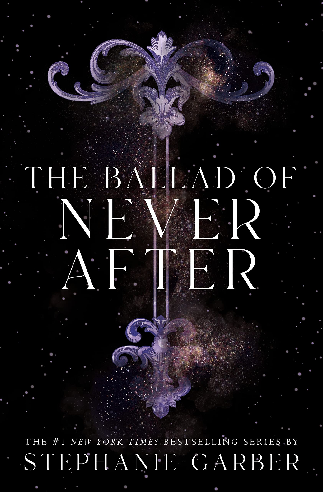

The Ballad of Never After

˗ˏˋ ★ ★ ★ ★ ★ ˎˊ˗
Placeholder Placeholder Placeholder Placeholder Placeholder Placeholder Placeholder Placeholder Placeholder Placeholder Placeholder Placeholder Placeholder Placeholder Placeholder Placeholder Placeholder Placeholder Placeholder Placeholder Placeholder Placeholder Placeholder Placeholder Placeholder Placeholder Placeholder Placeholder Placeholder Placeholder Placeholder Placeholder Placeholder Placeholder Placeholder Placeholder Placeholder Placeholder Placeholder Placeholder Placeholder Placeholder Placeholder Placeholder Placeholder Placeholder Placeholder Placeholder Placeholder Placeholder Placeholder Placeholder Placeholder Placeholder Placeholder Placeholder Placeholder Placeholder Placeholder Placeholder Placeholder Placeholder Placeholder Placeholder Placeholder Placeholder Placeholder Placeholder Placeholder Placeholder Placeholder Placeholder Placeholder Placeholder Placeholder Placeholder Placeholder Placeholder Placeholder Placeholder Placeholder Placeholder Placeholder Placeholder Placeholder Placeholder Placeholder Placeholder Placeholder Placeholder Placeholder Placeholder Placeholder Placeholder Placeholder Placeholder Placeholder Placeholder Placeholder Placeholder Placeholder Placeholder Placeholder Placeholder Placeholder Placeholder Placeholder Placeholder Placeholder Placeholder Placeholder Placeholder Placeholder Placeholder Placeholder Placeholder Placeholder Placeholder Placeholder Placeholder Placeholder Placeholder Placeholder Placeholder Placeholder Placeholder Placeholder Placeholder Placeholder Placeholder
Write a Review